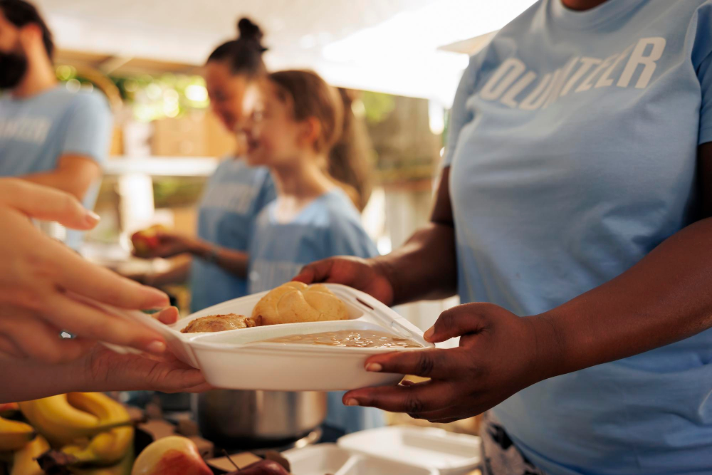
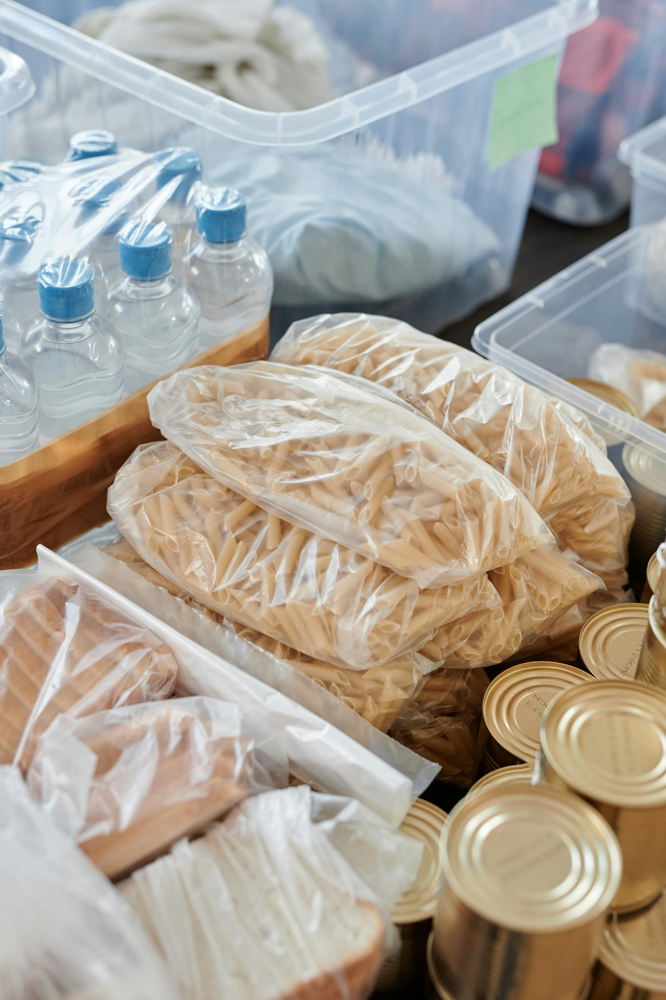

Volunteer
Opportunities to serve and volunteer are all around us. Especially when the need is constant! Serving others is how we show our love to God and to our neighbors. Remember what Jesus said in Matthew 25:40: "ye have done it unto me."
Just Me
If you want to volunteer today by yourself, click here! We'll show you the local shelters and resource centers that could use your help immediately.
OpportunitiesWith My Friends
You can also volunteer with your friends or youth group. You'll need to plan a bit ahead, since these places need to consider how they can accomodate large groups. For some of these, you show up with your group and the organization will provide everything. For others, you get to plan, prep, cook, serve, and clean up! Click here to find out more.
Opportunities